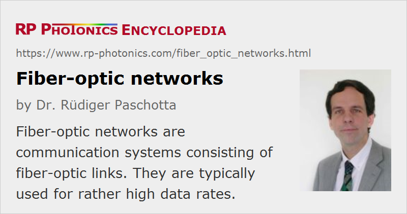

Fiber-optic Networks
Definition: communication systems consisting of fiber-optic links
German: faseroptische Netzwerke
Categories: fiber optics and waveguides, lightwave communications
How to cite the article; suggest additional literature
Author: Dr. Rüdiger Paschotta
A fiber-optic network is a system for optical fiber communications which consists of a number of fiber-optic links and additional components which make it possible to send data from any node of the network to any other one. This technology heavily builds on fiber optics. It mostly works with glass fibers, but for short-distance transmission it may also contain plastic optical fibers.
Optical networks are grouped according to the area covered:
- A local area network (LAN) links two or more points within a small area, e.g. within a building or between a few buildings.
- A metropolitan area network (MAN) covers a larger area, e.g. that of a city.
- A wide area network (WAN) extends over a larger area, e.g. a whole country or even more.
Typically, larger-scale networks are built by connecting smaller-scale networks. For example, metropolitan networks can be connected to form a wide area network.
Another distinction is that of active optical networks, containing active components such as fiber amplifiers, and passive optical networks (PON), using only passive components such as optical filters and splitters (apart from the always required transmitters and receivers).
According to the data rate, additional attributes can be given. For example, GPON means gigabit PON, which is a passive optical network with a downstream data rate of 2.5 Gbit/s and an upstream rate of 1.25 Gbit/s.
Suppliers
The RP Photonics Buyer's Guide contains 13 suppliers for fiber-optic networks.
Questions and Comments from Users
Here you can submit questions and comments. As far as they get accepted by the author, they will appear above this paragraph together with the author’s answer. The author will decide on acceptance based on certain criteria. Essentially, the issue must be of sufficiently broad interest.
Please do not enter personal data here; we would otherwise delete it soon. (See also our privacy declaration.) If you wish to receive personal feedback or consultancy from the author, please contact him e.g. via e-mail.
By submitting the information, you give your consent to the potential publication of your inputs on our website according to our rules. (If you later retract your consent, we will delete those inputs.) As your inputs are first reviewed by the author, they may be published with some delay.
See also: optical fiber communications, fiber-optic links, fiber optics
and other articles in the categories fiber optics and waveguides, lightwave communications
|  |
If you like this page, please share the link with your friends and colleagues, e.g. via social media:
These sharing buttons are implemented in a privacy-friendly way!